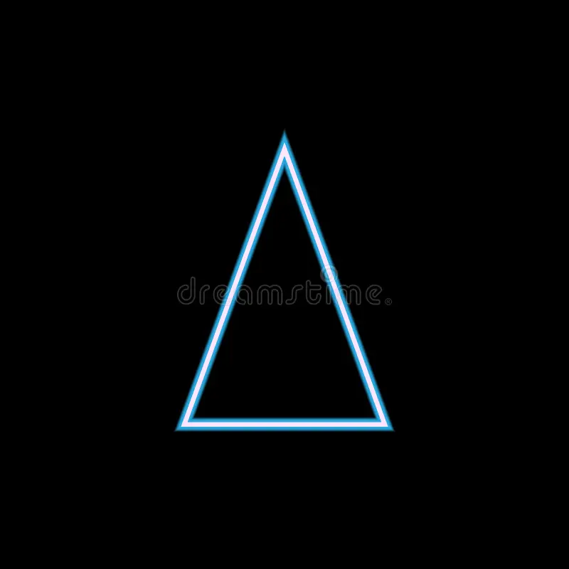

Isosceles
Un triángulo isósceles es aquel que tiene al menos dos lados de igual longitud. Los ángulos opuestos a estos lados iguales también son iguales.
Características de un triángulo Isosceles
- Dos lados iguales: Como su nombre indica, tiene dos lados de igual longitud.
- Ángulos iguales: Los ángulos opuestos a los lados iguales son congruentes (iguales).
- Altura y mediana coincidentes: La altura relativa a la base (el lado desigual) también es mediana y bisectriz.
- Teorema del triángulo isósceles: Los ángulos de la base son congruentes, y viceversa: si un triángulo tiene ángulos de la base congruentes, es isósceles.
